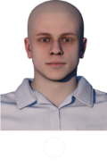
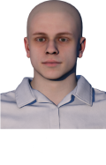
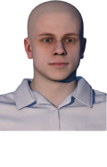
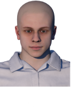
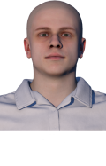

    
Start Capture
Capture Photo
Making flexatar
00 : 00 / ( 00:20 )
Turn head the same angles as assistant shows.
Don't turn your head too much.
Pretend you are lazy to do it.
Keep mouth closed.
Make again
To conference